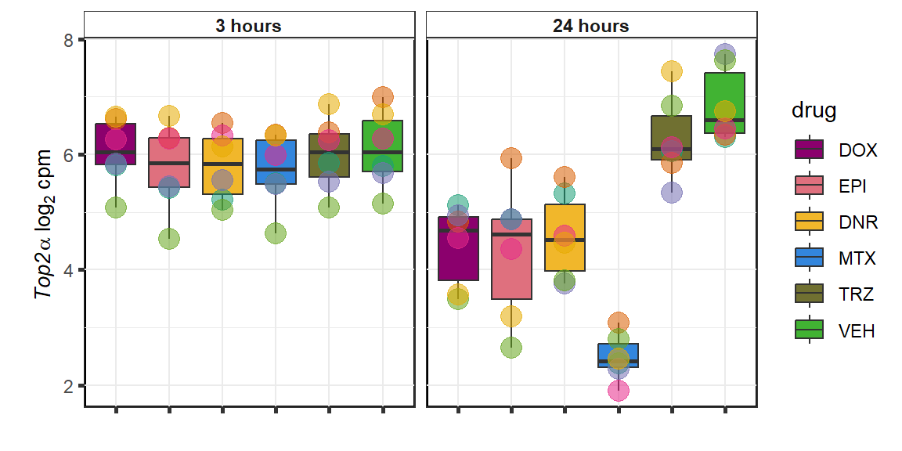

GOI_plots
ERM
2023-06-23
Last updated: 2023-06-23
Checks: 7 0
Knit directory: Cardiotoxicity/
This reproducible R Markdown analysis was created with workflowr (version 1.7.0). The Checks tab describes the reproducibility checks that were applied when the results were created. The Past versions tab lists the development history.
Great! Since the R Markdown file has been committed to the Git repository, you know the exact version of the code that produced these results.
Great job! The global environment was empty. Objects defined in the global environment can affect the analysis in your R Markdown file in unknown ways. For reproduciblity it’s best to always run the code in an empty environment.
The command set.seed(20230109) was run prior to running
the code in the R Markdown file. Setting a seed ensures that any results
that rely on randomness, e.g. subsampling or permutations, are
reproducible.
Great job! Recording the operating system, R version, and package versions is critical for reproducibility.
Nice! There were no cached chunks for this analysis, so you can be confident that you successfully produced the results during this run.
Great job! Using relative paths to the files within your workflowr project makes it easier to run your code on other machines.
Great! You are using Git for version control. Tracking code development and connecting the code version to the results is critical for reproducibility.
The results in this page were generated with repository version b327d60. See the Past versions tab to see a history of the changes made to the R Markdown and HTML files.
Note that you need to be careful to ensure that all relevant files for
the analysis have been committed to Git prior to generating the results
(you can use wflow_publish or
wflow_git_commit). workflowr only checks the R Markdown
file, but you know if there are other scripts or data files that it
depends on. Below is the status of the Git repository when the results
were generated:
Ignored files:
Ignored: .RData
Ignored: .Rhistory
Ignored: .Rproj.user/
Ignored: data/41588_2018_171_MOESM3_ESMeQTL_ST2_for paper.csv
Ignored: data/Arr_GWAS.txt
Ignored: data/Arr_geneset.RDS
Ignored: data/BC_cell_lines.csv
Ignored: data/CADGWASgene_table.csv
Ignored: data/CAD_geneset.RDS
Ignored: data/Clamp_Summary.csv
Ignored: data/Cormotif_24_k1-5_raw.RDS
Ignored: data/DAgostres24.RDS
Ignored: data/DAtable1.csv
Ignored: data/DDEMresp_list.csv
Ignored: data/DDE_reQTL.txt
Ignored: data/DDEresp_list.csv
Ignored: data/DEG-GO/
Ignored: data/DEG_cormotif.RDS
Ignored: data/DF_Plate_Peak.csv
Ignored: data/DRC48hoursdata.csv
Ignored: data/Da24counts.txt
Ignored: data/Dx24counts.txt
Ignored: data/Dx_reQTL_specific.txt
Ignored: data/Ep24counts.txt
Ignored: data/GOIsig.csv
Ignored: data/GOplots.R
Ignored: data/GTEX_setsimple.csv
Ignored: data/GTEx_gene_list.csv
Ignored: data/HFGWASgene_table.csv
Ignored: data/HF_geneset.RDS
Ignored: data/Heart_Left_Ventricle.v8.egenes.txt
Ignored: data/Hf_GWAS.txt
Ignored: data/K_cluster
Ignored: data/K_cluster_kisthree.csv
Ignored: data/K_cluster_kistwo.csv
Ignored: data/LD50_05via.csv
Ignored: data/LDH48hoursdata.csv
Ignored: data/Mt24counts.txt
Ignored: data/RINsamplelist.txt
Ignored: data/Seonane2019supp1.txt
Ignored: data/TOP2Bi-24hoursGO_analysis.csv
Ignored: data/TR24counts.txt
Ignored: data/Top2biresp_cluster24h.csv
Ignored: data/Viabilitylistfull.csv
Ignored: data/allexpressedgenes.txt
Ignored: data/allgenes.txt
Ignored: data/allmatrix.RDS
Ignored: data/averageviabilitytable.RDS
Ignored: data/avgLD50.RDS
Ignored: data/backGL.txt
Ignored: data/cormotif_3hk1-8.RDS
Ignored: data/cormotif_initalK5.RDS
Ignored: data/cormotif_initialK5.RDS
Ignored: data/cormotif_initialall.RDS
Ignored: data/counts24hours.RDS
Ignored: data/cpmcount.RDS
Ignored: data/cpmnorm_counts.csv
Ignored: data/crispr_genes.csv
Ignored: data/ctnnt_results.txt
Ignored: data/cvd_GWAS.txt
Ignored: data/dat_cpm.RDS
Ignored: data/data_outline.txt
Ignored: data/efit2.RDS
Ignored: data/efit2results.RDS
Ignored: data/ensembl_backup.RDS
Ignored: data/ensgtotal.txt
Ignored: data/filenameonly.txt
Ignored: data/filtered_cpm_counts.csv
Ignored: data/filtered_raw_counts.csv
Ignored: data/filtermatrix_x.RDS
Ignored: data/folder_05top/
Ignored: data/geneDoxonlyQTL.csv
Ignored: data/gene_corr_df.RDS
Ignored: data/gene_corr_frame.RDS
Ignored: data/gene_prob_tran3h.RDS
Ignored: data/gene_probabilityk5.RDS
Ignored: data/gostresTop2bi_ER.RDS
Ignored: data/gostresTop2bi_LR
Ignored: data/gostresTop2bi_LR.RDS
Ignored: data/gostresTop2bi_TI.RDS
Ignored: data/gostrescoNR
Ignored: data/gtex/
Ignored: data/heartgenes.csv
Ignored: data/individualDRCfile.RDS
Ignored: data/individual_DRC48.RDS
Ignored: data/individual_LDH48.RDS
Ignored: data/knowfig4.csv
Ignored: data/knowfig5.csv
Ignored: data/ld50_table.csv
Ignored: data/mymatrix.RDS
Ignored: data/nonresponse_cluster24h.csv
Ignored: data/norm_LDH.csv
Ignored: data/norm_counts.csv
Ignored: data/old_sets/
Ignored: data/plan2plot.png
Ignored: data/raw_counts.csv
Ignored: data/response_cluster24h.csv
Ignored: data/sigVDA24.txt
Ignored: data/sigVDA3.txt
Ignored: data/sigVDX24.txt
Ignored: data/sigVDX3.txt
Ignored: data/sigVEP24.txt
Ignored: data/sigVEP3.txt
Ignored: data/sigVMT24.txt
Ignored: data/sigVMT3.txt
Ignored: data/sigVTR24.txt
Ignored: data/sigVTR3.txt
Ignored: data/siglist.RDS
Ignored: data/slope_table.csv
Ignored: data/table3a.omar
Ignored: data/toplistall.RDS
Ignored: data/tvl24hour.txt
Ignored: data/tvl24hourw.txt
Ignored: data/venn_code.R
Untracked files:
Untracked: .RDataTmp
Untracked: .RDataTmp1
Untracked: .RDataTmp2
Untracked: OmicNavigator_learn.R
Untracked: code/DRC_plotfigure1.png
Untracked: code/cpm_boxplot.R
Untracked: code/extracting_ggplot_data.R
Untracked: code/fig1plot.png
Untracked: code/figurelegeddrc.png
Untracked: cormotif_probability_genelist.csv
Untracked: individual-legenddark2.png
Untracked: installed_old.rda
Untracked: motif_ER.txt
Untracked: motif_LR.txt
Untracked: motif_NR.txt
Untracked: motif_TI.txt
Untracked: output/output-old/
Untracked: reneebasecode.R
Note that any generated files, e.g. HTML, png, CSS, etc., are not included in this status report because it is ok for generated content to have uncommitted changes.
These are the previous versions of the repository in which changes were
made to the R Markdown (analysis/GOI_plots.Rmd) and HTML
(docs/GOI_plots.html) files. If you’ve configured a remote
Git repository (see ?wflow_git_remote), click on the
hyperlinks in the table below to view the files as they were in that
past version.
| File | Version | Author | Date | Message |
|---|---|---|---|---|
| Rmd | b327d60 | reneeisnowhere | 2023-06-23 | fix images not loading |
| html | 995ce68 | reneeisnowhere | 2023-06-23 | Build site. |
| Rmd | 26afd1e | reneeisnowhere | 2023-06-23 | adding heatmaps |
| Rmd | c1d667f | reneeisnowhere | 2023-06-23 | updating the codes at Friday start. |
| html | 924262d | reneeisnowhere | 2023-06-16 | Build site. |
| Rmd | eab6c68 | reneeisnowhere | 2023-06-16 | update on code moving |
| Rmd | 3d4ca64 | reneeisnowhere | 2023-06-16 | updates on Friday |
cpm_boxplot <-function(cpmcounts, GOI,brewer_palette, fill_colors, ylab) {
##GOI needs to be ENTREZID
df <- cpmcounts
df_plot <- df %>%
dplyr::filter(rownames(.)==GOI) %>%
pivot_longer(everything(),
names_to = "treatment",values_to = "counts") %>%
separate(treatment, c("drug","indv","time")) %>%
mutate(time=factor(time, levels =c("3h", "24h"))) %>%
mutate(indv=factor(indv, levels = c(1,2,3,4,5,6))) %>%
mutate(drug =case_match(drug, "Da"~"Daunorubicin",
"Do"~"Doxorubicin",
"Ep"~"Epirubicin",
"Mi"~"Mitoxantrone",
"Tr"~"Trastuzumab",
"Ve"~"Vehicle", .default = drug))
plot <- ggplot2::ggplot(df_plot, aes(x=drug, y=counts))+
geom_boxplot(position="identity",aes(fill=drug))+
geom_point(aes(col=indv, size=2, alpha=0.5))+
guides(alpha= "none", size= "none")+
scale_color_brewer(palette = brewer_palette, guide = "none")+
scale_fill_manual(values=fill_colors)+
facet_wrap("time", nrow=1, ncol=2)+
theme_bw()+
ylab(ylab)+
xlab("")+
theme(strip.background = element_rect(fill = "white"),
plot.title = element_text(size=18,hjust = 0.5),
axis.title = element_text(size = 15, color = "black"),
axis.ticks = element_line(linewidth = 1.5),
axis.line = element_line(linewidth = 1.5),
axis.text.x = element_text(size = 12, color = "white", angle = 0),
strip.text.x = element_text(size = 15, color = "black", face = "bold"))
print(plot)
}library(ComplexHeatmap)
library(tidyverse)
library(ggsignif)
library(RColorBrewer)
library(scales)
library(sjmisc)
library(kableExtra)
library(broom)
library(ggstats)
library(Hmisc)
library(ggpubr)<environment: R_GlobalEnv><environment: R_GlobalEnv>Genes of Interest log2 cpm
TOP2B
 ### CDKN1a
### CDKN1a

Top2a

### ATM
### ATR

Rictor
 ### mTOR
### mTOR
 ### RARG
### RARG

KAT6b
cpm_boxplot(cpmcounts,GOI='23522',"Dark2",drug_pal_vehend,
ylab=(expression(atop(" ",italic("KAT6B")~log[2]~"cpm "))))
KDM5b
cpm_boxplot(cpmcounts,GOI='10765',"Dark2",drug_pal_vehend,
ylab=(expression(atop(" ",italic("KDM5B")~log[2]~"cpm "))))
KDM4b
cpm_boxplot(cpmcounts,GOI='23030',"Dark2",drug_pal_vehend,
ylab=(expression(atop(" ",italic("KDM4B")~log[2]~"cpm ")))) ## expression correlation:
## expression correlation:
| time | id | ENTREZID | SYMBOL | adj.P.Val | |
|---|---|---|---|---|---|
| 23254…1 | 24_hours | Daunorubicin | 23254 | KAZN | 0.0000175 |
| 23030…2 | 24_hours | Daunorubicin | 23030 | KDM4B | 0.0001975 |
| 283337…3 | 24_hours | Daunorubicin | 283337 | ZNF740 | 0.0002275 |
| 10818…4 | 24_hours | Daunorubicin | 10818 | FRS2 | 0.0005879 |
| 51020…5 | 24_hours | Daunorubicin | 51020 | HDDC2 | 0.0020530 |
| 5916…6 | 24_hours | Daunorubicin | 5916 | RARG | 0.0052878 |
| 10818…7 | 24_hours | Doxorubicin | 10818 | FRS2 | 0.0000482 |
| 23254…8 | 24_hours | Doxorubicin | 23254 | KAZN | 0.0001905 |
| 23030…9 | 24_hours | Doxorubicin | 23030 | KDM4B | 0.0013753 |
| 51020…10 | 24_hours | Doxorubicin | 51020 | HDDC2 | 0.0065896 |
| 283337…11 | 24_hours | Doxorubicin | 283337 | ZNF740 | 0.0141077 |
| 64078…12 | 24_hours | Doxorubicin | 64078 | SLC28A3 | 0.0292968 |
| 5916…13 | 24_hours | Doxorubicin | 5916 | RARG | 0.0439585 |
| 10818…14 | 24_hours | Epirubicin | 10818 | FRS2 | 0.0001665 |
| 23254…15 | 24_hours | Epirubicin | 23254 | KAZN | 0.0007793 |
| 51020…16 | 24_hours | Epirubicin | 51020 | HDDC2 | 0.0010982 |
| 5916…17 | 24_hours | Epirubicin | 5916 | RARG | 0.0124123 |
| 64078…18 | 24_hours | Epirubicin | 64078 | SLC28A3 | 0.0149064 |
| 283337…19 | 24_hours | Epirubicin | 283337 | ZNF740 | 0.0177562 |
| 23030…20 | 24_hours | Epirubicin | 23030 | KDM4B | 0.0236417 |
entrezgene_id ensembl_gene_id hgnc_symbol
1 10818 ENSG00000166225 FRS2
2 51020 ENSG00000111906 HDDC2
3 23522 ENSG00000281813 KAT6B
4 23254 ENSG00000189337 KAZN
5 23030 ENSG00000127663 KDM4B
6 5916 ENSG00000172819 RARG
7 64078 ENSG00000197506 SLC28A3
8 6579 ENSG00000084453 SLCO1A2
9 28234 ENSG00000111700 SLCO1B3
10 54575 ENSG00000242515 UGT1A10
11 283337 ENSG00000139651 ZNF740


entrezgene_id ensembl_gene_id hgnc_symbol
1 10818 ENSG00000166225 FRS2
2 51020 ENSG00000111906 HDDC2
3 23522 ENSG00000281813 KAT6B
4 23254 ENSG00000189337 KAZN
5 23030 ENSG00000127663 KDM4B
6 5916 ENSG00000172819 RARG
7 64078 ENSG00000197506 SLC28A3
8 6579 ENSG00000084453 SLCO1A2
9 28234 ENSG00000111700 SLCO1B3
10 54575 ENSG00000242515 UGT1A10
11 283337 ENSG00000139651 ZNF740


entrezgene_id ensembl_gene_id hgnc_symbol
1 10818 ENSG00000166225 FRS2
2 51020 ENSG00000111906 HDDC2
3 23522 ENSG00000281813 KAT6B
4 23254 ENSG00000189337 KAZN
5 23030 ENSG00000127663 KDM4B
6 5916 ENSG00000172819 RARG
7 64078 ENSG00000197506 SLC28A3
8 6579 ENSG00000084453 SLCO1A2
9 28234 ENSG00000111700 SLCO1B3
10 54575 ENSG00000242515 UGT1A10
11 283337 ENSG00000139651 ZNF740


RARG correlation
ld50_via_RARG <- read.csv("data/LD50_05via.csv",row.names=1)
ld50_via_RARG <- ld50_via_RARG %>%
mutate(indv=factor(indv))
test <- RNAnormlist %>%
mutate(indv=factor(indv,levels = level_order2)) %>%
mutate(indv=as.numeric(indv)) %>%
mutate(indv=factor(indv)) %>%
mutate(Drug = factor(Drug, levels = c("Daunorubicin",
"Doxorubicin",
"Epirubicin",
"Mitoxantrone",
"Trastuzumab",
"Vehicle"))) %>%
dplyr::select(indv, Drug,rldh,rtnni) #%>%
RARG_corr_frame <- gene_corr_df %>%
filter(entrezgene_id ==5916) %>%
left_join(., ld50_via_RARG, by=c("Drug","indv")) %>%
dplyr::select(indv, Drug,sDrug,entrezgene_id,counts, Viability,LD50) %>%
mutate(Drug=factor(Drug)) %>%
full_join(.,GOI_genelist, by="entrezgene_id") %>%
full_join(., test, by=c("Drug","indv" )) %>% as.data.frame()
SL25_corr_frame <- gene_corr_df %>%
filter( entrezgene_id ==64078) %>%
left_join(., ld50_via_RARG, by=c("Drug","indv")) %>%
dplyr::select(indv, Drug,sDrug,entrezgene_id,counts, Viability,LD50) %>%
mutate(Drug=factor(Drug)) %>%
full_join(.,GOI_genelist, by="entrezgene_id") %>%
full_join(., test, by=c("Drug","indv" )) %>% as.data.frame()
RARG_plotld50 <- RARG_corr_frame %>%
dplyr::filter(entrezgene_id == 5916) %>%
ggplot(., aes(x=LD50, y=counts))+
geom_point(aes(col=indv))+
geom_smooth(method="lm")+
facet_wrap(hgnc_symbol~Drug, scales="free")+
theme_classic()+
xlab(bquote('LD'[50]~'in '*mu*M)) +
ylab(bquote("Gene counts in log"[2]~" cpm")) +
ggtitle(bquote("Correlation of LD"[50]~" and Log"[2]~"cpm"))+
scale_color_brewer(palette = "Dark2",name = "Individual", label = c("1","2","3","4","5","6"))+
stat_cor(method="pearson",
aes(label = paste(..r.label.., ..p.label.., sep = "~`,`~")),
color = "red",
label.x.npc = 0,
label.y.npc=1,
size = 3)+
theme(plot.title = element_text(size = rel(1.5), hjust = 0.5,face = "bold"),
axis.title = element_text(size = 15, color = "black"),
axis.ticks = element_line(size = 1.5),
axis.text = element_text(size = 8, color = "black", angle = 20),
strip.text.x = element_text(size = 12, color = "black", face = "italic"))
print(RARG_plotld50)
RARG_plotrtnni <- RARG_corr_frame %>%
dplyr::filter(entrezgene_id == 5916) %>%
ggplot(., aes(x=rtnni, y=counts))+
geom_point(aes(col=indv))+
geom_smooth(method="lm")+
facet_wrap(hgnc_symbol~Drug, scales="free")+
theme_classic()+
xlab(bquote("relative Troponin I release")) +
ylab(bquote("Gene counts in log "[2]~" cpm")) +
ggtitle(bquote("Correlation of cTNNT at 0.5"*mu*"M and Log"[2]~"cpm"))+
scale_color_brewer(palette = "Dark2",name = "Individual", label = c("1","2","3","4","5","6"))+
stat_cor(method="pearson",
aes(label = paste(..r.label.., ..p.label.., sep = "~`,`~")),
color = "red",
label.x.npc = 0,
label.y.npc=1,
size = 3)+
theme(plot.title = element_text(size = rel(1.5), hjust = 0.5,face = "bold"),
axis.title = element_text(size = 15, color = "black"),
axis.ticks = element_line(size = 1.5),
axis.text = element_text(size = 8, color = "black", angle = 20),
strip.text.x = element_text(size = 12, color = "black", face = "italic"))
rarg_plot_data <- ggplot_build(RARG_plotrtnni)
rarg_dataT <- data.frame('rho_tnni'= rarg_plot_data$data[[3]]$r, 'sig'=c(rarg_plot_data$data[[3]]$p.value))
row.names(rarg_dataT) <- list("DNR","DOX","EPI","MTX", "TRX", "VEH") slc_plotld50 <- SL25_corr_frame %>%
dplyr::filter(entrezgene_id == 64078) %>%
ggplot(., aes(x=LD50, y=counts))+
geom_point(aes(col=indv))+
geom_smooth(method="lm")+
facet_wrap(hgnc_symbol~Drug, scales="free")+
theme_classic()+
xlab(bquote('LD'[50]~'in '*mu*M)) +
ylab(bquote("Gene counts in log"[2]~" cpm")) +
ggtitle(bquote("Correlation of LD"[50]~" and Log"[2]~"cpm"))+
scale_color_brewer(palette = "Dark2",name = "Individual", label = c("1","2","3","4","5","6"))+
stat_cor(method="pearson",
aes(label = paste(..r.label.., ..p.label.., sep = "~`,`~")),
color = "red",
label.x.npc = 0,
label.y.npc=1,
size = 3)+
theme(plot.title = element_text(size = rel(1.5), hjust = 0.5,face = "bold"),
axis.title = element_text(size = 15, color = "black"),
axis.ticks = element_line(size = 1.5),
axis.text = element_text(size = 8, color = "black", angle = 20),
strip.text.x = element_text(size = 12, color = "black", face = "italic"))
print (slc_plotld50)
slc_plotvia <- SL25_corr_frame %>%
dplyr::filter(entrezgene_id == 64078) %>%
ggplot(., aes(x=Viability, y=counts))+
geom_point(aes(col=indv))+
geom_smooth(method="lm")+
facet_wrap(hgnc_symbol~Drug, scales="free")+
theme_classic()+
xlab(bquote("viability/100")) +
ylab(bquote("Gene counts in log "[2]~" cpm")) +
ggtitle(bquote("Correlation of viability at 0.5"*mu*"M and Log"[2]~"cpm"))+
scale_color_brewer(palette = "Dark2",name = "Individual", label = c("1","2","3","4","5","6"))+
stat_cor(method="pearson",
aes(label = paste(..r.label.., ..p.label.., sep = "~`,`~")),
color = "red",
label.x.npc = 0,
label.y.npc=1,
size = 3)+
theme(plot.title = element_text(size = rel(1.5), hjust = 0.5,face = "bold"),
axis.title = element_text(size = 15, color = "black"),
axis.ticks = element_line(size = 1.5),
axis.text = element_text(size = 8, color = "black", angle = 20),
strip.text.x = element_text(size = 12, color = "black", face = "italic"))
print(slc_plotvia)
slc_plottnni <- SL25_corr_frame %>%
dplyr::filter(entrezgene_id == 64078) %>%
ggplot(., aes(x=rtnni, y=counts))+
geom_point(aes(col=indv))+
geom_smooth(method="lm")+
facet_wrap(hgnc_symbol~Drug, scales="free")+
theme_classic()+
xlab(bquote("relative Troponin I")) +
ylab(bquote("Gene counts in log "[2]~" cpm")) +
ggtitle(bquote("Correlation Troponin I release and Log"[2]~"cpm"))+
scale_color_brewer(palette = "Dark2",name = "Individual", label = c("1","2","3","4","5","6"))+
stat_cor(method="pearson",
aes(label = paste(..r.label.., ..p.label.., sep = "~`,`~")),
color = "red",
label.x.npc = 0,
label.y.npc=1,
size = 3)+
theme(plot.title = element_text(size = rel(1.5), hjust = 0.5,face = "bold"),
axis.title = element_text(size = 15, color = "black"),
axis.ticks = element_line(size = 1.5),
axis.text = element_text(size = 8, color = "black", angle = 20),
strip.text.x = element_text(size = 12, color = "black", face = "italic"))
print(slc_plottnni)
##RARG info:
rarg_plot_dataL <- ggplot_build(RARG_plotld50)
rarg_data <- data.frame('rho_LD50'= c(rarg_plot_dataL$data[[3]]$r,NA,NA), 'sig_LD50'=c(rarg_plot_dataL$data[[3]]$p.value,NA,NA),'rowname'=c("DNR","DOX","EPI","MTX", "TRX", "VEH"))
rarg_plot_data <- ggplot_build(RARG_plotrtnni)
rarg_dataT <- data.frame('rho_tnni'= rarg_plot_data$data[[3]]$r, 'sig_tnni'=c(rarg_plot_data$data[[3]]$p.value),'rowname'=c("DNR","DOX","EPI","MTX", "TRX", "VEH"))
row.names(rarg_dataT) <- list("DNR","DOX","EPI","MTX", "TRX", "VEH")
rarg_mat <- rarg_data %>%
left_join(.,rarg_dataT,join_by(rowname)) %>%
column_to_rownames('rowname') %>%
select(rho_LD50,rho_tnni) %>%
as.matrix()
rarg_mat_sig <- rarg_data %>%
left_join(.,rarg_dataT,join_by(rowname)) %>%
column_to_rownames('rowname') %>%
select(sig_LD50,sig_tnni) %>%
mutate_all(~replace(., is.na(.), 1)) %>%
as.matrix()
# col_fun5 = circlize::colorRamp2(c(0, 5), c("white", "purple"))
Heatmap( rarg_mat, name = "correlation value",
column_title = "Correlations of LD50 and troponin release to log2cpm",
cluster_rows = FALSE, cluster_columns = FALSE,
# col=col_fun1,
column_names_rot = 0,na_col = "grey",
cell_fun = function(j, i, x, y, width, height, fill) {
if(rarg_mat_sig[i, j]<0.05)
grid.text("*", x, y, gp = gpar(fontsize = 20))
})
##Slc info:
slc_plot_dataL <- ggplot_build(slc_plotld50)
slc_data <- data.frame('rho_LD50'= c(slc_plot_dataL$data[[3]]$r,NA,NA), 'sig_LD50'=c(slc_plot_dataL$data[[3]]$p.value,NA,NA),'rowname'=c("DNR","DOX","EPI","MTX", "TRX", "VEH"))
slc_plot_data <- ggplot_build(slc_plottnni)
slc_dataT <- data.frame('rho_tnni'= slc_plot_data$data[[3]]$r, 'sig_tnni'=c(slc_plot_data$data[[3]]$p.value),'rowname'=c("DNR","DOX","EPI","MTX", "TRX", "VEH"))
# row.names(rarg_dataT) <- list("DNR","DOX","EPI","MTX", "TRX", "VEH")
slc_mat <- slc_data %>%
left_join(.,slc_dataT,join_by(rowname)) %>%
column_to_rownames('rowname') %>%
select(rho_LD50,rho_tnni) %>%
as.matrix()
slc_mat_sig <- slc_data %>%
left_join(.,slc_dataT,join_by(rowname)) %>%
column_to_rownames('rowname') %>%
select(sig_LD50,sig_tnni) %>%
mutate_all(~replace(., is.na(.), 1)) %>%
as.matrix()
# col_fun5 = circlize::colorRamp2(c(0, 5), c("white", "purple"))
Heatmap( rarg_mat, name = "correlation value",
column_title = "Correlations of LD50 and troponin release to log2cpm of SCL28A3",
cluster_rows = FALSE, cluster_columns = FALSE,
# col=col_fun1,
column_names_rot = 0,na_col = "grey",
cell_fun = function(j, i, x, y, width, height, fill) {
if(slc_mat_sig[i, j]<0.05)
grid.text("*", x, y, gp = gpar(fontsize = 20))
})
sessionInfo()R version 4.2.2 (2022-10-31 ucrt)
Platform: x86_64-w64-mingw32/x64 (64-bit)
Running under: Windows 10 x64 (build 19045)
Matrix products: default
locale:
[1] LC_COLLATE=English_United States.utf8
[2] LC_CTYPE=English_United States.utf8
[3] LC_MONETARY=English_United States.utf8
[4] LC_NUMERIC=C
[5] LC_TIME=English_United States.utf8
attached base packages:
[1] grid stats graphics grDevices utils datasets methods
[8] base
other attached packages:
[1] ggpubr_0.6.0 Hmisc_5.1-0 ggstats_0.3.0
[4] broom_1.0.5 kableExtra_1.3.4 sjmisc_2.8.9
[7] scales_1.2.1 RColorBrewer_1.1-3 ggsignif_0.6.4
[10] lubridate_1.9.2 forcats_1.0.0 stringr_1.5.0
[13] dplyr_1.1.2 purrr_1.0.1 readr_2.1.4
[16] tidyr_1.3.0 tibble_3.2.1 ggplot2_3.4.2
[19] tidyverse_2.0.0 ComplexHeatmap_2.12.1 workflowr_1.7.0
loaded via a namespace (and not attached):
[1] colorspace_2.1-0 rjson_0.2.21 sjlabelled_1.2.0
[4] rprojroot_2.0.3 circlize_0.4.15 htmlTable_2.4.1
[7] GlobalOptions_0.1.2 base64enc_0.1-3 fs_1.6.2
[10] clue_0.3-64 rstudioapi_0.14 farver_2.1.1
[13] fansi_1.0.4 xml2_1.3.4 codetools_0.2-19
[16] splines_4.2.2 doParallel_1.0.17 cachem_1.0.8
[19] knitr_1.43 Formula_1.2-5 jsonlite_1.8.5
[22] cluster_2.1.4 png_0.1-8 compiler_4.2.2
[25] httr_1.4.6 backports_1.4.1 Matrix_1.5-4.1
[28] fastmap_1.1.1 cli_3.6.1 later_1.3.1
[31] htmltools_0.5.5 tools_4.2.2 gtable_0.3.3
[34] glue_1.6.2 Rcpp_1.0.10 carData_3.0-5
[37] jquerylib_0.1.4 vctrs_0.6.3 nlme_3.1-162
[40] svglite_2.1.1 iterators_1.0.14 insight_0.19.2
[43] xfun_0.39 ps_1.7.5 rvest_1.0.3
[46] timechange_0.2.0 lifecycle_1.0.3 rstatix_0.7.2
[49] getPass_0.2-2 hms_1.1.3 promises_1.2.0.1
[52] parallel_4.2.2 yaml_2.3.7 gridExtra_2.3
[55] sass_0.4.6 rpart_4.1.19 stringi_1.7.12
[58] highr_0.10 S4Vectors_0.34.0 foreach_1.5.2
[61] checkmate_2.2.0 BiocGenerics_0.42.0 shape_1.4.6
[64] rlang_1.1.1 pkgconfig_2.0.3 systemfonts_1.0.4
[67] matrixStats_1.0.0 lattice_0.21-8 evaluate_0.21
[70] htmlwidgets_1.6.2 labeling_0.4.2 processx_3.8.1
[73] tidyselect_1.2.0 magrittr_2.0.3 R6_2.5.1
[76] IRanges_2.30.1 generics_0.1.3 pillar_1.9.0
[79] whisker_0.4.1 foreign_0.8-84 withr_2.5.0
[82] mgcv_1.8-42 abind_1.4-5 nnet_7.3-19
[85] crayon_1.5.2 car_3.1-2 utf8_1.2.3
[88] tzdb_0.4.0 rmarkdown_2.22 GetoptLong_1.0.5
[91] data.table_1.14.8 callr_3.7.3 git2r_0.32.0
[94] digest_0.6.31 webshot_0.5.4 httpuv_1.6.11
[97] stats4_4.2.2 munsell_0.5.0 viridisLite_0.4.2
[100] bslib_0.5.0